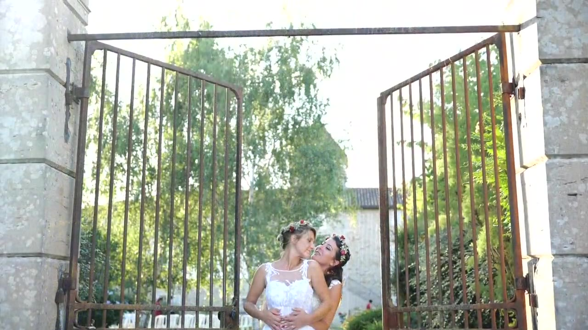
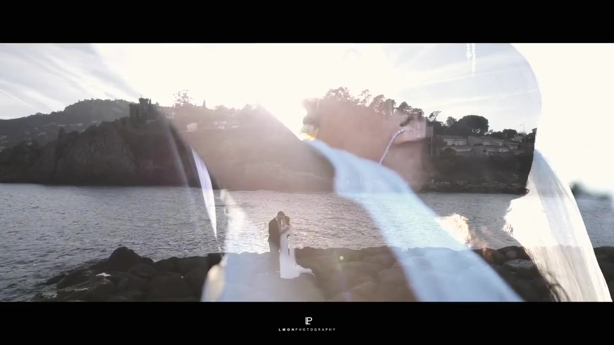
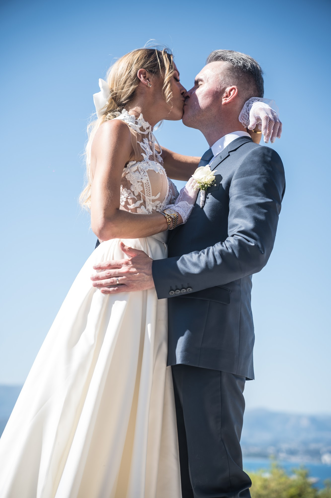
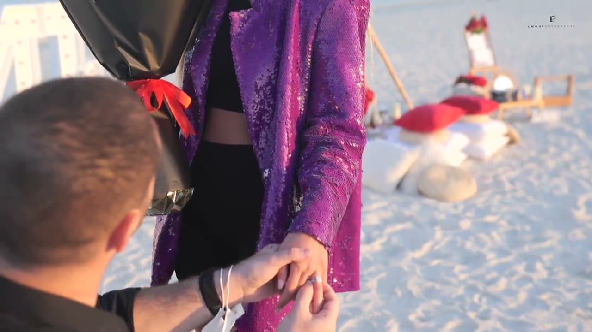

Vidéaste de mariage à Lyon
Une photo arrête le temps. Un film rend le reste : les voix, les rires, la musique, l’émotion d’un discours. Je filme les mariages à Lyon, en Rhône-Alpes et partout en France, pour vous offrir un film qui se regarde comme une histoire, pas comme une suite de plans.

Des films qui racontent votre journée
Je tourne avec la même discrétion qu’en photo : pas de projecteur dans les yeux, pas de scènes à rejouer. Je capte ce qui se passe vraiment, puis je construis le récit au montage, avec un rythme, une musique et une émotion qui vous ressemblent.
Les voix tiennent une place importante : un extrait de vos vœux, un mot d’un témoin, un rire. Ce sont souvent ces sons-là qui font monter les larmes des années plus tard.

Teaser, film court ou film long
Le teaser, d’une à deux minutes, condense l’émotion de la journée : c’est celui qu’on partage et qu’on regarde le plus. Le film plus long prend le temps de raconter, avec la cérémonie, les discours et la soirée. Selon vos envies, vous pouvez choisir l’un, l’autre ou les deux.
Nous en parlons dès le premier échange, pour que la formule colle à votre journée et à votre budget.

Photo et vidéo : le même regard

Je suis aussi photographe. Réserver la photo et la vidéo avec un seul prestataire, c’est une équipe qui travaille ensemble au lieu de se gêner, et des images qui partagent la même lumière et la même sensibilité.
À Lyon, en France et à l’étranger
Je me déplace dans tout le Rhône, l’Isère, l’Ain, la Savoie, la Haute-Savoie et la Drôme, et partout en France ou à l’étranger. Mariage au château, au bord d’un lac, sur la Côte d’Azur ou demande en mariage à Dubaï : le film s’adapte au lieu et à votre histoire.

Comment ça se passe
- Vous m’écrivez avec votre date et votre lieu.
- Nous échangeons sur vos envies : teaser, film long, musique, moments clés.
- Vous recevez un devis clair, et la date est bloquée à la réservation.
- Le jour J, je filme avec discrétion, de la préparation à la soirée.
- Vous recevez votre film en haute définition, prêt à être partagé.
Questions fréquentes
Quelle est la durée d’un film de mariage ?
Un teaser dure généralement d’une à deux minutes. Un film plus long peut aller de dix minutes à bien plus, selon ce que vous souhaitez garder. Nous définissons ensemble le format qui vous convient.
Pouvons-nous choisir la musique ?
Oui, donnez-moi vos envies et vos styles préférés : nous choisissons ensemble l’ambiance musicale du film.
Faut-il réserver le photographe et le vidéaste ensemble ?
Ce n’est pas obligatoire, mais c’est plus simple : un seul interlocuteur, une même façon de travailler, et des images qui se répondent.
Vous déplacez-vous loin de Lyon ?
Oui, partout en France et à l’étranger. Les éventuels frais de déplacement sont indiqués dans le devis.
Vous imaginez déjà le film de votre mariage ? Écrivez-moi pour en parler.